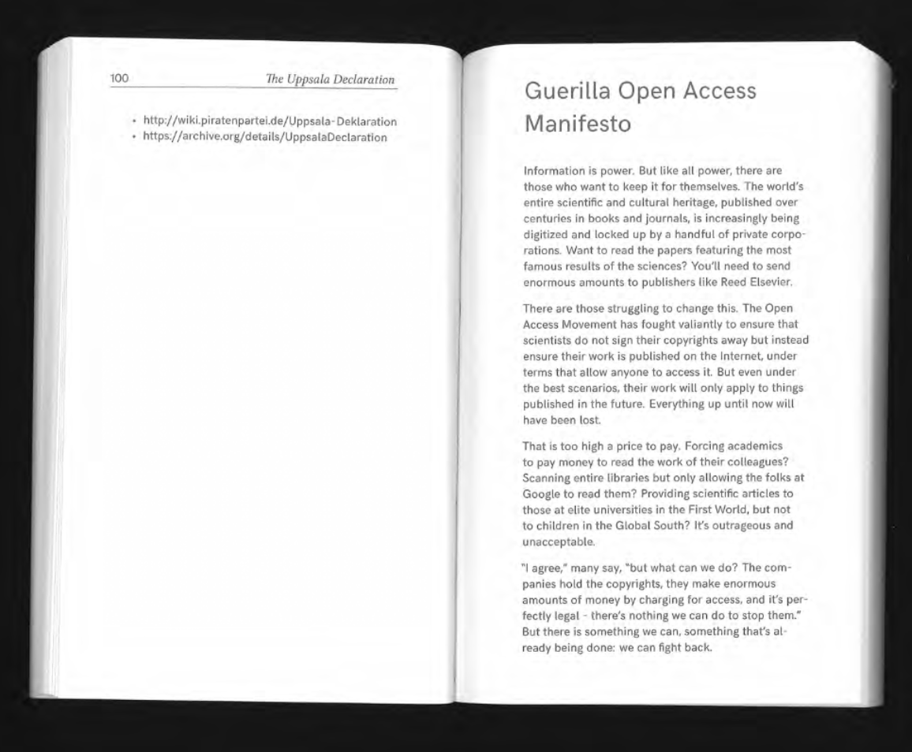

Responsive design ensures that websites adapt smoothly to different screen sizes and devices. This is achieved using flexible layouts, fluid images, and CSS techniques like media queries. The goal is to create a seamless experience across desktops, tablets, and mobile devices.
Phone Wireframe
Homepage Wireframe
Guerilla Open Access Manifesto
The entire body of scientific and cultural knowledge published in books and journals is increasingly being digitized and restricted by private corporations. This challenges the idea that nothing can be done about it and emphasizes the importance of free access to information. It also highlights the unacceptable inequalities between communities that have access and those that do not. 
Defense of the Poor Image- Hito Steyerl 2009
The poor image is a low-resolution, widely circulated copy that loses quality as it spreads but gains accessibility. It challenges the hierarchy of high-resolution media, allowing marginalized content to be seen despite commercialization and digital degradation.